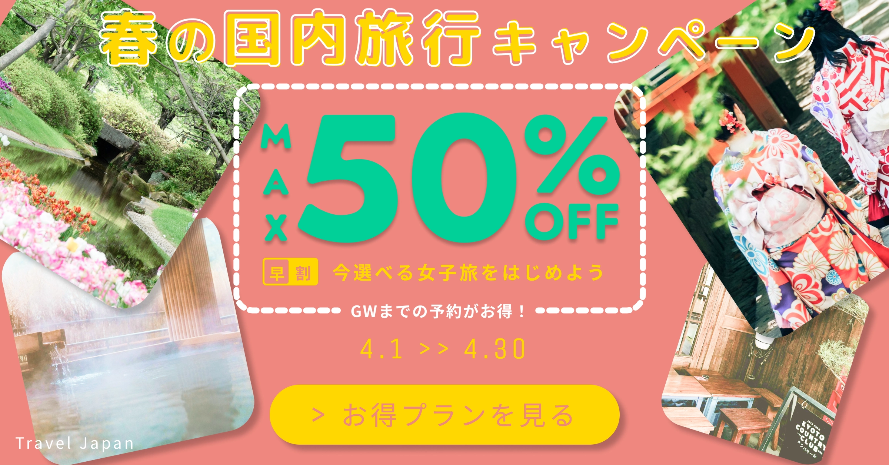
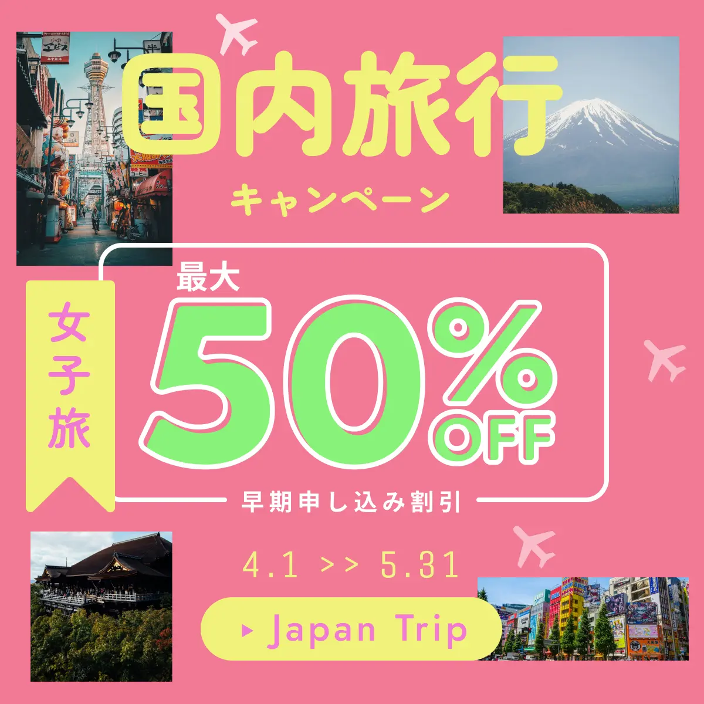
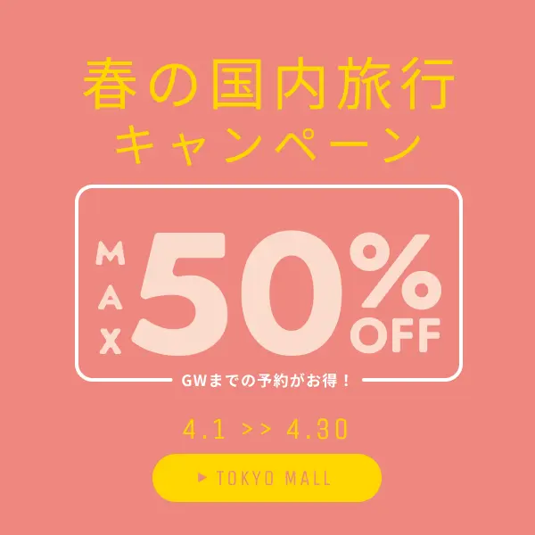
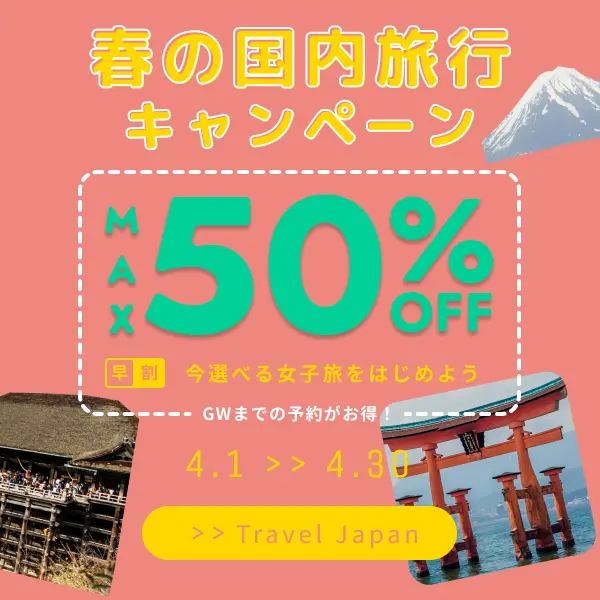
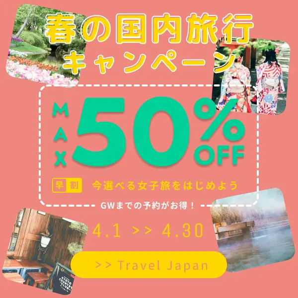

国内旅行キャンペーンのバナー
原寸大バナーと制作過程をご覧になれます。

20代〜40代の女性をターゲットに、国内旅行キャンペーンの告知バナーとして制作しました。
キャッチフレーズは「今選べる女子旅をはじめよう」に決定。写真をちりばめて遊び心を表現しました。
女子色を出すためピンク系の暖色を基調に使用しています。
観光名所の写真もバランスを考えて、20代～40代の女性の好みに合わせた、
自然あふれる花畑、観光をする着物姿の女性、京都の純喫茶、温泉とバランスを取りました。
Variation
サイズ違いのバリエーションです。
-
1200×628 横長

観光名所の写真を大胆に回転させ、斜め配置で思い出の写真の質感を出しました。
写真の大きさを均一ではなく、バラバラにして手取り写真を感じさせる仕上げにしました。
Before → After
バナーの改善過程です。
-
Before

-
After
Before：写真を整列させたので全体的に退屈な印象となりました。
After：写真の角度を傾けて配置もランダムにずらしました。
結果：堅苦しいカタログ感を排除して遊び心の演出に成功しました。
Before：大阪の通天閣などターゲットに合わない写真を使用
After：女性の好みをリサーチして京都の純喫茶などの写真に差し替え
結果：女子旅を始めたい気分を高めるものとなりました。
Before：CTAボタンが会社の名前、漠然とした早期割引限定
After：CTAボタンのフレーズを「お得プランをみる」へと変更。限定特典も具体的に目立つようにしました。
結果：訴求力が高まりターゲットである女性のタップ率を高めるバナーとなりました。
History
細かい制作過程です。
-

1.バナー制作講座の課題に沿って作ったものです。（キャッチフレーズや商品名などは講座のショッピングモールから国内旅行に変更しました）
-

2.富士山や清水寺、箱根神社と写真が年配の方のターゲットへと偏っていました。写真と文字を重ねることを恐れて無難なレイアウトになっていました。
-

3.テレビのバラエティ番組で女性作家の方が京都の純喫茶が好きだと発言されていたので、写真の選定をやり直しました。
-

4.温泉の水面の反射や京都の純喫茶の写真の明るさ調整などをして、CTAボタンのフレーズも変更して完成です。